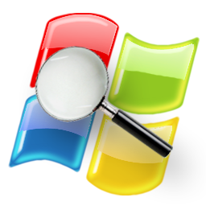

Estos datos pueden incluir:
Las herramientas de diagnóstico son instrumentos que se utilizan para identificar problemas o fallas en un sistema, equipo o proceso. Pueden ser utilizadas en una variedad de campos, incluyendo la informática, la medicina, la ingeniería, la industria y los negocios.

En la informática, las herramientas de diagnóstico se utilizan para identificar problemas con el hardware o el software de una computadora. Pueden ser utilizadas para solucionar problemas de rendimiento, estabilidad o errores.
las herramientas de diagnóstico se utilizan para identificar problemas con equipos o procesos. Pueden ser utilizadas para prevenir fallas, mejorar el rendimiento o aumentar la eficiencia.
se utilizan para recopilar datos sobre el rendimiento de los sistemas informáticos, las aplicaciones y los componentes de infraestructura.
Estos datos pueden incluir:
se utilizan para identificar la causa de los errores de software, los errores de hardware y los errores de sistema.

Algunos ejemplos de herramientas de diagnóstico de errores informáticas incluyen:
Es una herramienta de administración de procesos para Windows que proporciona información detallada sobre los procesos que se ejecutan en el sistema. Permite a los usuarios ver información como el uso de CPU y memoria, las dependencias de los procesos, los hilos de ejecución y los archivos abiertos. Process Explorer también incluye una serie de funciones para administrar procesos, como matar procesos, suspender procesos y cambiar las prioridades de los procesos.
Es una herramienta que escanea las redes Wi-Fi cercanas y proporciona información sobre ellas, como el nombre de la red, el tipo de seguridad, la intensidad de la señal y el canal que utilizan. Wi-Fi Analyzer también puede utilizarse para identificar las redes Wi-Fi más congestionadas y encontrar canales menos congestionados para tu propia red Wi-Fi.
Es una herramienta de escaneo de puertos que escanea un rango de direcciones IP para identificar los puertos abiertos y los servicios que se ejecutan en esos puertos. Angry IP Scanner también puede utilizarse para identificar los dispositivos que están conectados a una red.
Es una herramienta de análisis de uso de disco que escanea el disco duro y muestra una representación visual del uso del espacio en disco. WinDirStat puede utilizarse para identificar los archivos y carpetas que ocupan más espacio en disco y para liberar espacio en disco eliminando archivos innecesarios.
Es una herramienta que proporciona información sobre el estado de la unidad de disco duro, como la temperatura, la velocidad de lectura/escritura y el número de errores. CrystalDiskInfo también puede utilizarse para predecir la vida útil de la unidad de disco duro.
Es un programa antivirus y anti-malware que escanea el sistema en busca de malware y virus. Malwarebytes también puede utilizarse para eliminar el malware y los virus que se encuentren en el sistema.
Es una herramienta que se utiliza para reparar píxeles atascados en pantallas LCD y LED. JScreenFix funciona haciendo que los píxeles atascados parpadeen a diferentes colores, lo que puede ayudar a reparar los píxeles. 
Es una herramienta que escanea una red para identificar los dispositivos que están conectados a ella. SoftPerfect Network Scanner también puede utilizarse para obtener información sobre los dispositivos, como el nombre del dispositivo, la dirección IP y el MAC.